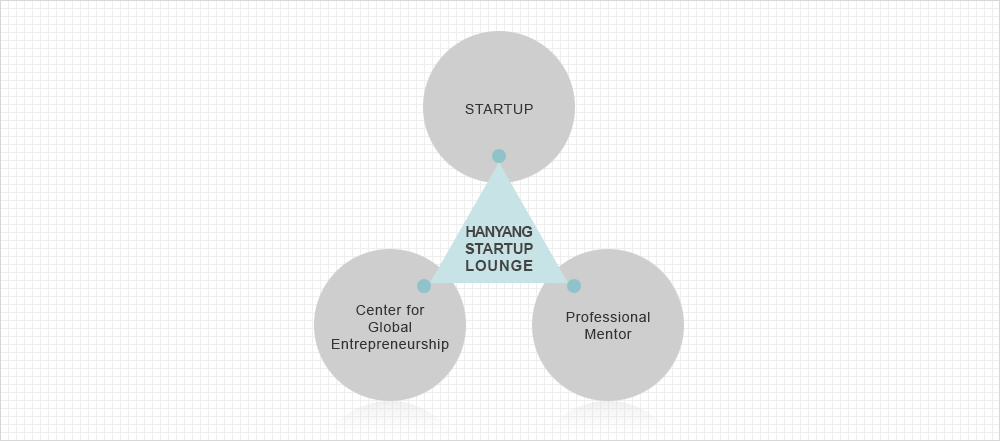

Open platform of information exchange and cooperation networks!
Hanyang Startup Lounge is an open platform where Hanyang University Center for Global Entrepreneurship, prospective entrepreneurs and beginning entrepreneurs, and the professional mentors of each field the networks of information exchange and cooperation networks.

Main Functions
-
- Information
- You can check the useful information of startup-related education and program such as startup education and special lectures, startup competitions, startup internships, moving into the Business Incubator center, and angel investment, etc., which are provided by the Center for Global Entrepreneurship .
-
- Education
- E-Learning Center provides useful educational contents such as startup-related lectures and interviews with startup experts and CEOs to those interested in startup.
-
- Mentoring
- Through various routes such as idea proposal, business model evaluation, and mentoring program, we support prospective/beginning entrepreneurs to receive the help of experts in their business development stage.
-
- Recruiting
- We created a job vacancy/job search board for prospective entrepreneurs and startups to find excellent teammates.